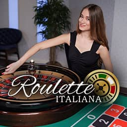

La sezione wintoto live ti fa piazzare scommesse su eventi già iniziati, con quote che si muovono a ogni azione. Calcio, tennis, basket, pallavolo ed esports: il palinsesto in-play è attivo 24/7 e copre parecchi sport. Qui vediamo come gira il live betting sulla piattaforma, quali mercati trovi in diretta, come gestire cash out e delay di accettazione, e cosa sapere su pagamenti e sicurezza prima di aprire un conto.
Cos'è la sezione Scommesse Live di Wintoto
Il live betting (o in-play) è la scommessa piazzata a partita in corso: un gol, un break al servizio o un canestro spostano le quote all'istante, e tu entri nel momento che ti sembra più conveniente. Roba diversa dal pre-match. Qui conta leggere la partita mentre scorre, non l'analisi fatta prima del fischio d'inizio.
Su wintoto live entri subito: dopo il login, la voce "Live" nel menu porta agli eventi in corso, ordinati per sport e orario. Ogni evento mostra punteggio aggiornato, tempo di gioco e mercati ancora aperti. La sezione non chiude mai, quindi anche di notte becchi campionati sudamericani, tennis dall'altra parte del mondo o tornei di esports.
Come funzionano le scommesse live su Wintoto
Il percorso per la prima giocata in diretta è dritto:
- Registrazione — apri l'account con i tuoi dati e completi la verifica dell'identità richiesta dall'operatore.
- Deposito — ricarichi il conto con uno dei metodi disponibili; il saldo si aggiorna al volo.
- Selezione dell'evento — apri la sezione live e scegli la partita che ti interessa.
- Giocata con quote dinamiche — clicchi sulla quota, metti l'importo in bolletta e confermi.
- Settlement — a mercato chiuso, la vincita finisce sul saldo in automatico.
Prima di puntare in-play, due meccanismi vanno capiti bene. Il primo è il delay di accettazione: quando confermi una giocata live, il sistema aspetta qualche secondo prima di prenderla. Se in quel momento la quota si muove parecchio — un gol, un rigore, un'espulsione — la puntata può saltare oppure ti viene proposta la quota nuova. Non è un difetto. È una tutela standard che ti evita di giocare su quote ormai vecchie.
Il secondo è il cash out anticipato: chiudi la scommessa prima della fine, incassando un importo calcolato sulle quote del momento. Sei in vantaggio? Blocchi un profitto più basso ma sicuro. Sta andando male? Recuperi parte della puntata. L'importo balla secondo per secondo, quindi disponibilità e valore vanno controllati direttamente sulla bolletta attiva.
Occhio anche agli scenari particolari: partita sospesa o rinviata, gol annullato dal VAR, statistica corretta a posteriori, tempi supplementari. In questi casi il calcolo della giocata e la sospensione temporanea del cash out seguono le regole ufficiali dell'operatore — vale la pena leggere i termini di settlement nella sezione regolamento prima di puntare.
Sport e mercati live disponibili
Il palinsesto in diretta copre le discipline più giocate in Italia, ognuna con i suoi mercati. Trovi la Serie A e la Champions League per il calcio, il circuito ATP e WTA per il tennis, poi basket, pallavolo ed esports.
| Sport | Mercati live tipici |
|---|---|
| Calcio | Risultato finale (1X2), over/under gol, prossimo gol, handicap asiatico, doppia chance, gol/no gol |
| Tennis | Vincitore match, vincitore set, punteggio esatto set, over/under game, prossimo game |
| Basket | Testa a testa, handicap punti, over/under totale punti, vincitore quarto |
| Pallavolo | Vincitore match, handicap set, over/under punti per set |
| Esports | Vincitore mappa, handicap round, over/under mappe |
Nel calcio i mercati live più liquidi restano over/under e prossimo gol: lì le quote corrono più veloci ed è dove leggere la partita ti dà un vantaggio vero. Nel tennis, invece, il "vincitore set" durante un tie-break è tra i più nervosi in assoluto — le oscillazioni sono fulminee, e il delay di accettazione si sente eccome.
Streaming live e statistiche in tempo reale
Scommettere in-play senza vedere il campo è come guidare bendati. Per questo la sezione live mette accanto alle quote un pannello di statistiche in tempo reale: possesso palla, tiri totali e in porta, calci d'angolo, gialli e rossi per il calcio; ace, doppi falli e percentuali al servizio per il tennis. Numeri che ti dicono chi sta davvero dominando, ben oltre il punteggio secco.
Dove disponibile, l'evento arriva con live streaming video o widget grafici animati che ricostruiscono l'azione: posizione della palla, attacchi pericolosi, fasi di gioco.
Scommesse live da mobile
Il live si gioca soprattutto da telefono. Sei allo stadio, al bar o sul divano e vuoi puntare sul prossimo gol in dieci secondi. La versione mobile di Wintoto è pensata mobile-first, non il sito desktop rimpicciolito. Il responsive gira da browser su iOS e Android, con bolletta rapida e cash out a un pollice di distanza.
Nel live i tempi di caricamento pesano: una quota vista con cinque secondi di ritardo è una quota morta. Verifica le funzioni effettive (aggiornamento delle quote, recupero della bolletta dopo un'interruzione) direttamente sul dispositivo, perché la resa può cambiare per device e connessione.
Quote live, limiti di puntata e pagamenti
Le quote in-play sono dinamiche per natura: cambiano decine di volte durante un evento e seguono l'andamento reale della partita. Puntata minima e massima variano per sport, mercato e momento — i limiti esatti spuntano nella bolletta prima di confermare, quindi guardali lì e non su cifre generiche.
Per i prelievi, tempi, commissioni e limiti dipendono dal metodo scelto: trovi il dettaglio per ogni canale nel cassiere del conto. Al primo prelievo serve la verifica dell'identità (KYC): carica i documenti subito dopo la registrazione, così quando arriva la vincita non ti ritrovi bloccato.
Sicurezza, licenza e gioco responsabile
Prima di depositare, controlla la licenza dell'operatore per il mercato italiano: qui l'ente regolatore è l'ADM (ex AAMS) e la concessione la verifichi nel footer del sito e nel registro pubblico dell'agenzia. È il primo filtro di affidabilità, e conta più di qualsiasi recensione.
Sul lato tecnico, una piattaforma affidabile protegge dati del conto e transazioni con crittografia SSL, mentre la correttezza dei payout dovrebbe passare da audit indipendenti — le certificazioni di fair play attive sono indicate nella sezione dedicata del sito, dove conviene verificarle. Per il gioco responsabile cerca gli strumenti di autotutela: limiti di deposito, limiti di sessione e autoesclusione, di norma attivabili dalle impostazioni del conto.
Per l'assistenza, verifica i canali indicati nella sezione supporto (chat, email, orari di disponibilità): utile soprattutto nel live betting, dove un problema di settlement o una scommessa contestata vanno chiusi in fretta.
Domande frequenti sulle scommesse live Wintoto
Come posso contattare l'assistenza Wintoto? Controlla la sezione assistenza del sito: lì trovi i canali attivi (chat live, email) e gli orari di disponibilità aggiornati. Per le scommesse live la chat è di norma la scelta più rapida, perché dà risposta immediata su settlement e giocate contestate.
Wintoto offre il cash out sulle scommesse live? Sì, dove il mercato lo prevede puoi chiudere la scommessa prima della fine e incassare l'importo calcolato sulle quote del momento. Il valore del cash out cambia in tempo reale: lo vedi nella bolletta attiva e lo confermi con un tocco.
È possibile guardare lo streaming live delle partite? Su una parte degli eventi trovi lo streaming video o un widget grafico animato; le statistiche in tempo reale (possesso, tiri, cartellini) sono più diffuse.
Quali sport posso giocare in diretta? Il palinsesto live copre calcio (Serie A, Champions League e campionati esteri), tennis ATP e WTA, basket, pallavolo ed esports. I mercati più giocati in-play sono risultato finale, over/under, prossimo gol, handicap e vincitore set, con quote aggiornate a ogni azione.
Quanto tempo ci vuole per prelevare le vincite? Tempi e limiti dipendono dal metodo di prelievo scelto: il dettaglio per ogni canale è nel cassiere del conto. Al primo prelievo serve la verifica dell'identità, quindi conviene chiudere il KYC subito dopo la registrazione per evitare ritardi.